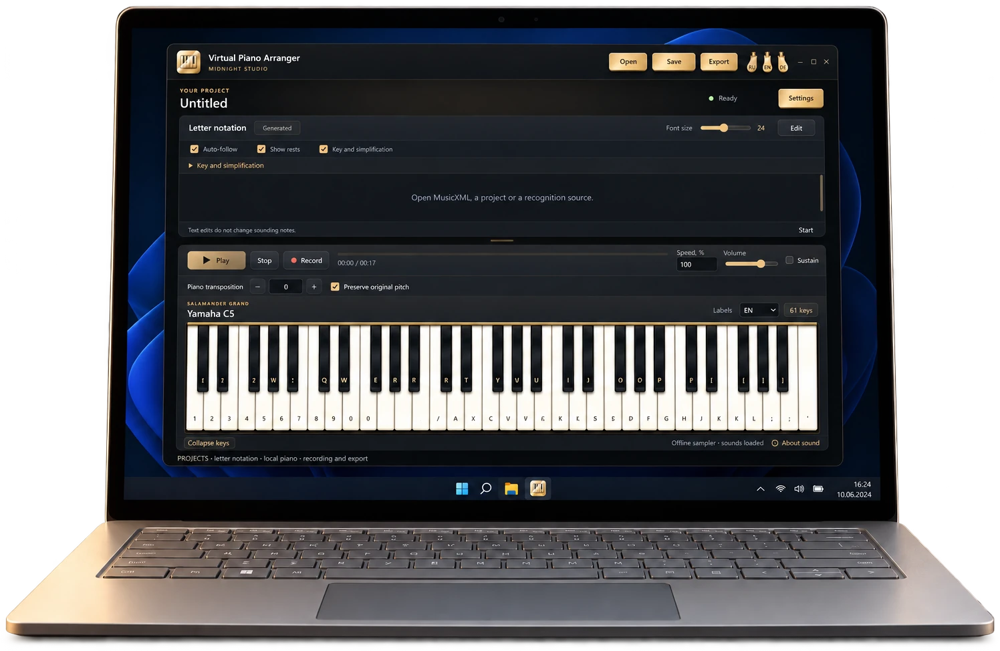

NEWVersion 0.1.0-preview.1 is out What's new →
Virtual Piano Arranger
Offline piano, letter notation and selected MIDI part import. Score recognition is experimental.
Preview · 0.1.0-preview.1Before you startWindows x64; Python/Qt and separate recognition runtime bundled. EXE unsigned.


What's inside
Installation, features, data flow and checks.
Installation
The steps from “First steps” in the README and the release description.
1. Download the portable ZIP from GitHub Releases, compare SHA-256 with SHA256SUMS.txt
2. Extract the entire portable folder
Keep the EXE beside its companion files; no Python or administrator access needed
3. Start VirtualPianoArranger.exe (the EXE is not digitally signed)
4. Open a MIDI file, audition the parts and import them
Your data
The Windows program works offline on your PC. The piano page in the browser sends notes and files nowhere; there is no analytics and no cookies.
Runs locallyFeatures
Offline pianoLetter notationMIDI part selectionKey and simplificationShow restsWAV recordingMusicXML · VPA · TXTPiano in the browser
Checked
- Tests in the repository: Python tests (test_*.py) and tests of the browser version (web/tests, Node.js)
- SHA-256 checksum (SHA256SUMS.txt) and corresponding sources in the release
- Licence and provenance notices (THIRD_PARTY_NOTICES, MODEL_PROVENANCE)
- Guide in German, English and Russian
- Preview 0.1.0-preview.1: recognition accuracy, other PCs and long sessions are not yet thoroughly checked
How it works
- Play the piano
- Work with letter notation
- Arrange MIDI parts
First steps
Extract the entire portable folder, verify SHA-256, start VirtualPianoArranger.exe.